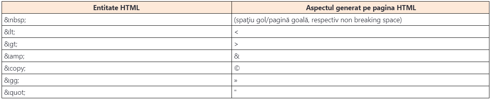

Baza fiecărui document HTML este textul. Totuşi, textul în cadrul documentului HTML poate avea diferite roluri, exact ca şi în cadrul oricărui alt document text, în care se pot deosebi diferite secţiuni text. Astfel, prin noţiunea de text se pot presupune titlurile, paragrafele, trecerile într-un rând nou, spaţierile, liniile verticale, precum şi diverse alte forme de text care printr-o formatare specială obţin o semnificaţie specială. În cadrul acestui modul vom aborda toate elementele relevante care asigură adăugarea textului în documentele HTML.
Fiecare document începe cu un titlu. Diferite părţi din document pot fi identificate prin subtitluri de diferite niveluri. Limbajul HTML cunoaşte 6 niveluri de titluri, care se creează prin folosirea următoarelor elemente HTML:
Titlurile într-un document HTML se specifică în funcţie de ierarhie. Astfel, h1 se foloseşte pentru titlurile principale, h2 pentru subtitluri etc. Această ierarhie trebuie respectată, aşadar, nu este corect dacă folosiţi, de exemplu, titlul h4 imediat după titlul h1.
Ierarhia titlurilor se aplică separat în diferite regiuni ale documentului HTML, desigur, dacă acest document HTML este alcătuit din mai multe regiuni. Astfel este posibil să avem mai multe titluri <h1> în cadrul unui document, care s-ar fi referit la diferite secţiuni ale documentului. Despre diferite secţiuni ale documentului HTML vom oferi mai multe detalii într-una din următoarele lecţii.
În documentele HTML, paragrafele se creează prin introducerea textului în cadrul tagului corespunzător de deschidere <p> şi de închidere </p>
Am spus deja că în timpul folosirii elementului paragraph se adaugă în mod automat o linie deasupra şi dedesubt de textul paragrafului. Totuşi, dacă trebuie să influenţăm acest lucru singuri, deci unde se va ajunge la întreruperea textului şi la trecerea într-un rând nou, putem folosi tagul <br>.
Elementul <hr> asigură despărţirea tematică a textului. Cu toate acestea, acest element a primit numele după noţiunea horizontal rule, care reprezintă o linie orizontală care se poate folosi pentru a despărţi/separa două secţiuni de text. Majoritatea browserelor randează tocmai în acest fel acest element care, pe lângă efectul său vizual, deţine şi o semnificaţie semantică, care asigură despărţirea tematică a textului.
Ca şi elementul <br>, nici elementul <hr> nu deţine conţinut şi se creează prin folosirea tagului cu autoînchidere.
Cand apare nevoia de păstrare a spaţiilor multiple, precum şi a trecerilor într-un rând nou fără utilizarea elementului
, este posibilă utilizarea elementului <pre>. Întregul conţinut din cadrul elementului <pre> păstrează toate spaţiile şi trecerile într-un rând nou.
În limbajul HTML, anumite caractere au o semnificaţie specială. Reprezentanţii ideali sunt, desigur, semnele mai mare şi mai mic (<>), cu ajutorul cărora se construiesc tagurile HTML. Am prezentat deja de mai multe ori că tagurile HTML în cadrul documentului se folosesc ca instrucţiuni pentru crearea paginii care va fi indicată browserului. Pur şi simplu, în procesul de parsare, browserul omite tagurile şi pe pagină afişează doar conţinutul elementelor HTML.
Acum se pune întrebarea: ce se va întâmpla dacă în cadrul documentului HTML vrem să scriem un tag HTML în forma sa sursă, text?
Răspunsul la această întrebare se află în utilizarea caracterelor de înlocuire. Caracterele de înlocuire sau entităţile HTML, cum se mai numesc, sunt utile în câteva situaţii. Astfel, entităţile HTML se pot folosi pentru rezolvarea problemelor cu anumite caractere rezervate. De asemenea, entităţile HTML se pot folosi pentru scrierea unor simboluri speciale pentru care nu există tastă pe tastatură.
Limbajul HTML asigură definirea textului prin diferite sisteme de scriere. Până în momentul de faţă, în cadrul documentelor HTML am definit textul scris în limba engleză, care este una dintre limbile din sistemul scris care deţine orientarea de la stânga la dreapta. Pur şi simplu, textul scris în limba engleză se scrie de la stânga la dreapta, aşadar, putem spune că deţine orientarea left-to-right (prescurtat LTR).
Pe lângă sistemele de scriere LTR, există cele la care scrierea se efectuează de la dreapta la stânga, right-to-left sau prescurtat RTL . Limbajul HTML asigură definirea orientării textului, folosind atributul dir.
Atributul dir se poate găsi pe orice element HTML, dar utilizarea sa are cel mai mult sens pe elementele cu care se marchează textul care va fi afişat pe pagină.
Autorul documentului HTML are posibilitatea să definească limba folosită pentru conţinutul text. Acest lucru se obţine cu atributul lang care, ca şi anteriorul atribut descris, dir, este unul dintre atributele globale.
Exemplu de utilizare a atributului lang:
1. <p lang="es">Este es el párrafo.</p>
Atributul lang se poate defini şi global, pe elementul html. În acest caz, limba definită se referă la întregul document:
1. <html lang="en">
2. ...
3. </html>
Comentariile reprezintă noţiunea care există în aproape toate limbajele de calculator. Acestea asigură autorului de documente definirea anumitor note în cadrul documentului HTML propriu-zis, care pe lângă aceasta, nu vor fi vizibile pe pagină după parsarea ei.
Comentariile HTML se formează prin folosirea marcajelor similare cu tagurile de deschidere şi închidere. Începutul comentariilor HTML se marchează cu semnul <!--, în timp ce sfârşitul comentariului se marchează cu semnul -->.
Exemplul de comentarii în cadrul documentului HTML:
<!-- This is HTML comment. -->
Comentariile HTML sunt folosite intensiv în cadrul exemplelor care se găsesc în ataşamentele lecţiilor în cadrul acestui program. Acestea sunt folosite pentru descrierea diferitor elemente lingvistice utilizate în timpul realizării exemplelor.